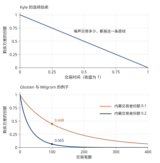

第 17 章 内幕交易者与做市商
当一家机构把持仓从一批管理人或资产换到另一批时，可以由一家专业公司执行订单；这样的调整叫组合转换（portfolio transition）。Kyle 与 Obizhaeva（2016）研究了一家这样的公司在 2001 至 2005 年为美国客户执行的 2,552 笔组合转换，剔除一部分之后剩下 439,765 笔订单。这些订单不大可能依据短命的私人信息（private information），因为做组合转换的决定及其时间，多半来自投资委员会和董事会的定期会议。
他们把一只股票的交易活跃度（trading activity）定义为成交金额与收益波动率的乘积，最低一组与最高一组股票的交易活跃度相差 150 倍。他们称为市场微观结构不变性（market microstructure invariance）的假说预测，各个量是交易活跃度的幂：订单大小的指数为 −2/3，意思是活跃度变为 8 倍时，中位数（median）订单占日成交量的份额变为原来的四分之一（本书的计算）。从最低组到最高组，中位数订单由平均日成交量的 3.33% 降到 0.14%，两端相差 23.79 倍，预测相差约 28.23 倍；中位数买卖价差（bid–ask spread），即交易商（dealer）卖出与买入的价格之差，两端相差 8.48 倍，预测约为 5.31 倍；每笔订单的平均交易费用（trading costs）从 44.95 个基点降到 6.16 个基点，一个基点是 0.01%，两端之比略大于预测的 5.31 倍。
适用边界 这个检验针对 2001 至 2005 年在组合转换中交易的美国股票的横截面，订单不大可能依据短命的私人信息。吻合的是交易活跃度的幂，在经济意义上相近，各组的活跃度相差约 150 倍；在两端，价差、订单大小和平均交易费用的两端之比分别是预测的 1.6、0.84 和 1.4 倍，都在两倍之内（本书的计算）。作者用同一批订单拟合了常数，这些数据不公开。订单大小的指数估计为 −0.62，统计检验拒绝了它等于 −2/3，价差费用的指数 −0.49 比 −1/3 低三个标准误；只有冲击费用的指数 −0.32 与 −1/3 相容。
不大可能带有消息的订单，照样要付价差和其他交易费用；按本书的读法，接下这些订单的交易商分不出它们与带消息的订单（本书的判断）。第 4 章对价值的定义和第 5 章的根模型（root model）把价格接受（price taking）当作前提，即没有哪个交易者的订单会推动价格；本章去掉这一条（5.8 节的表 5.1）。本章还去掉对数效用（log utility），因为 Kyle 的内幕交易者（insider）和做市商都是风险中性的；一并去掉无观察学习（no observational learning）与不从价格学习（no learning from prices），因为做市商给别人的订单定价（17.1 节）；并且，由于交易随机到来，去掉确定性平均场（deterministic mean field，17.5 节）。根模型里的价格是按财富加权的平均信念；取代它的是做市商（market maker），即随时准备买入和卖出的交易商，他给订单流（order flow），即买单与卖单的净额，定价。本章问价格怎样由订单形成、学得多快（17.1 节至 17.6 节），实测的冲击有什么形状、多大（17.7 节至 17.9 节），以及谁报价、谁知情（17.10 节）。1
17.1 给订单流定价
1.6.2 节给出了 Kyle（1985）的模型：一个风险中性的内幕交易者，即掌握私人信息的交易者，这个词不含合法与否的意思；噪声交易者（noise trader），出于与信息无关的原因随机交易；以及竞争性的风险中性做市商，他们按所见信息下的期望值定价。他们“不能分别观察到内幕交易者或噪声交易者各自的交易数量，也没有任何其他种类的特殊信息”；他们看到的是订单流。
从根模型到 Kyle 的模型，同时变了四件事（本书的判断）。价格的形成变成做市商的条件期望。订单流，即别人行动之和，决定价格，所以从价格学习与从别人的行动学习合成一件事，而根模型两者都没有；按 21.1.3 节的说法，做市商对订单流的解读是一种推断型高阶信念（inference-based higher-order belief），即关于别人相信什么的信念（本书的判断），表 5.1 把它算在无观察学习与不从价格学习之内，不算作去掉了一阶知识（first-order knowledge）。内幕交易者和做市商都是风险中性的。人传人的扩散也停了：内幕交易者不告诉任何人，噪声交易（noise trading）提供的伪装使他的交易瞒过做市商。噪声交易者留了下来，作他的掩护，他的期望利润等于他们的期望亏损（4.6 节）。
表 17.1 把本章四个价格形成模型并排列出；14.9 节给出了 Avery 与 Zemsky（1998）的模型，它是 Glosten 与 Milgrom（1985）模型的一个特例（工作论文版）。
表 17.1 四个价格形成模型
| 模型 | 谁知情，怎样交易 | 谁定价，依据什么 | 价格揭示什么 | 什么决定速度 | 节 |
|---|---|---|---|---|---|
| Kyle（1985） | 一个风险中性的内幕交易者，市价单不以价格为条件，变量服从正态分布 | 竞争性的风险中性做市商，依据净订单流 | 单次拍卖揭示他私人信息的一半；在连续交易的极限下，到收盘时揭示全部 | 截止时间与市场效率（本书的判断） | 17.2、17.3 |
| Kyle（1989） | 几个知情投机者（informed speculator），他们是不完全竞争者，各自选一个需求函数（demand function） | 没有做市商；拍卖人按同一价格出清所有需求函数和噪声交易 | 在不完全竞争（imperfect competition）下，最多揭示知情投机者私人精度的一半 | 一次拍卖；揭示多少随噪声、风险厌恶（risk aversion）和进入而变 | 17.4 |
| Glosten 与 Milgrom（1985） | 内幕交易者与流动性交易者（liquidity trader）逐个到来，每人一个单位 | 一个竞争性的专营商，逐笔交易，针对下一笔的方向报价 | 在交易相当均衡时，专营商与交易者的期望收敛 | 每笔交易的信息量与交易笔数（本书的推导） | 17.5 |
| Easley 与 O’Hara（1992） | 风险中性的知情交易者（informed trader），他们把价格当作给定，且信息事件（information event）已经发生 | 一个做市商，依据买入、卖出和没有成交的时段 | 报价收敛到它们的强式有效值 | 各交易结果分布之间最小的相对熵（relative entropy），按每单位时钟时间（clock time）计 | 17.6 |
表中只列出四个模型的不同之处，没有给它们排名（本书的判断）。
本章处理集中交易与公开价格（centralized trading with public prices）的情形（本书的判断）。在 3.6 节 Duffie 与 Manso（2007）的私下拍卖（private auction）里，出价不向不参加的人披露，所以交易本身就在传播信息（本书的判断）；第 19 章讨论这类分散市场（decentralized market）。2
17.2 Kyle 的内幕交易者
Kyle 的以下结果以这些前提为基础。一个风险中性的内幕交易者与噪声交易者和竞争性的风险中性做市商交易。每次拍卖里，内幕交易者与噪声交易者先选定要交易的数量，实际上是下市价单（market order），即按市场定的任何价格成交的订单。内幕交易者不可以让他的数量以价格为条件；选需求函数、也就是下限价单（limit order，即只在所定价格交易的订单）的内幕交易者，出现在 Kyle 的另一篇论文里。做市商只看到总订单流。随机变量服从正态分布，这使模型有易于处理的线性结构，在连续版本里，噪声交易者的数量服从布朗运动，即连续时间里的随机游走（random walk）。
在单次拍卖里，价格随订单流以斜率 上升，它的倒数是市场深度（market depth），即把价格推动一美元所需的订单流（1.9 节）。市场深度与噪声交易的量成正比，与尚未纳入价格的私人信息的量成反比。他的定理 1 在内幕交易者的交易和价格都是线性函数的那些均衡（equilibrium）里给出唯一的一个；对他的序贯拍卖，他怀疑但没能证明，不存在采用非线性规则的均衡。数学框 17.1 给出这个均衡，并指出论文陈述中的一处印刷错误。内幕交易者的期望利润与价值和噪声交易的标准差都成正比。Kyle 指出，噪声交易越多，引出的知情交易也越多，所以它不会使价格失稳，内幕交易者若是风险厌恶的，这个结果就不再成立。
Kyle 用他自己的话说，是“不严格地”讨论连续拍卖，径直假定存在唯一的线性均衡，结构与他的序贯拍卖相似；他的定理 4 表明，当相继拍卖的间隔缩小到零时，序贯均衡收敛到连续均衡，尽管序贯拍卖均衡里的深度并不随时间保持不变。所以连续的结果是一个极限，其中价格服从布朗运动，市场深度不随时间变化，所有私人信息到交易结束时都在价格里。尚未进入价格的私人信息，即给定价格时价值的方差 ，沿一条直线下降，，交易时间 从 0 走到收盘时的 1， 是先验方差。Kyle 把价格的恒定波动率读作信息以恒定的速率进入价格。内幕交易者知道价格会收敛到价值，但对观察不到价值的做市商，价格波动看起来没有漂移（drift）。
Kyle 解释了深度为什么必须保持不变。如果深度在某个时刻增大，内幕交易者想在增大之前先扰乱价格，以得到无界的利润；如果深度在某个时刻减小，他想立刻把全部私人信息放进价格。 不变时，剩余信息的任何一条路径，只要在收盘时到零，并且某个交易强度（intensity）能够达到，就满足内幕交易者利润最大的条件，所以均衡路径来自市场效率条件，即做市商按期望值定价。按本书的读法，私人信息渗进价格的速度由截止时间与市场效率共同决定；内幕交易者对各条路径没有偏好，噪声交易的量不改变这条路径（本书的判断）。
事先把噪声交易者的数量加倍，会使内幕交易者和做市商也把各自的数量加倍，对价格没有影响，并使内幕交易者的利润加倍。这一点对风险中性、信息由外部给定的单个内幕交易者成立（4.6 节）。17.4 节给出 Kyle 1989 年的几种情形，其中它不成立。3
17.3 Kyle 模型与根模型对照
与第 5 章的根模型并排看，Kyle 的模型有三处不同（本书的判断）。信息只通过内幕交易者的交易到达价格，没有口碑（word of mouth）。截止时间与市场效率决定节奏（17.2 节），所以剩余方差沿直线下降，而在根模型里，接触率与外部来源（external source）决定节奏，口碑超过外部来源时，知情比例（informed fraction）沿 S 曲线（S-curve）上升（5.2 节）。在 Kyle 的做市商看来，价格是没有漂移的布朗运动，而根模型的价格随知情比例移动，所以知道扩散已经走了多远的人可以预见它的方向（5.3 节）。
按信息的单位来看，图景变了（本书的推导；数学框 17.1）。时刻 的价格带有关于价值的 奈特（nat），奈特是以自然对数度量的信息单位，约 1.44 比特（bit），速率为每单位交易时间 奈特，随收盘临近无界增大，所以 Kyle 描述的恒定速率在方差的单位下成立。单次拍卖留下一半方差，不管参数如何，恰好是半个比特（本书的推导）。
在 3.5 节的价格信道（price channel），即价格作为信息的载体里，订单流每单位时间的信噪比（signal-to-noise ratio） 同样无界增大（本书的推导；数学框 17.1），所以 Kyle 的做市商是容量无限的观察者（本书的推论）；本书没有检验，恒定深度与到收盘时的完全揭示（full revelation）在 3.5 节的容量律（capacity law）之下是否仍然成立（本书的判断）。17.5 节的图 17.1 画出了 Kyle 的那条直线。4
17.4 按价格交易与出价
Kyle（1989）的模型有三类交易者：噪声交易者、知情投机者和未知情投机者。投机者是不完全竞争者，使自己利润的期望效用最大；在各自的私人观测（observation）实现之后，每人选一个需求函数，把其他投机者选择各自需求函数所用的策略当作给定。需求函数（英文也叫 demand schedule）说明在每个价格上买多少，所以交易以价格为条件，像限价单一样。拍卖人把各个需求函数加总，算出市场出清（market clearing）价格，并分配数量，所以这里没有做市商给订单流定价。4.6 节给出了他的结果，即在单次拍卖、正态变量和指数效用的条件下，不完全竞争时价格揭示的永远不超过知情投机者私人精度的一半。
在这里，噪声多了，价格揭示的可多可少。按他的定理 8.2，知情投机者的人数增加，或者每单位风险承担的噪声交易 减少，会提高信息效率参数 ，它是价格向其中一个知情交易者揭示的、其他知情交易者精度的份额。定理取 为正，所以它说的是风险厌恶的知情投机者，对他们，噪声增多会使 降低（本书的判断）。按他的定理 10.5，在他的垄断竞争模型里，潜在知情交易者以不变的成本无限弹性地供给，噪声交易增加会提高价格的信息含量。
出价是交易者自己的行动决定自己价格的另一种方式。Milgrom（1981）关于好消息与坏消息的论文，把结果用于矿权的密封投标。如果竞标者的估计在给定价值时相互独立，并且抽自具有单调似然比性质的分布族（在这种性质下，更高的估计总是关于价值的更好的消息），就可以合理地假定出价函数不减；以出价 赢得标的的竞标者平均会发现，在给定自己的估计、并给定其他所有出价都低于 时，价值的期望值低于只凭他自己的信息得出的估计，这“正是赢者诅咒”（winner’s curse），更高的出价可以缓解它。赢家付出自己的出价，所以他不是价格接受者（price taker）（本书的判断），不同于 16.6 节那些出自 Milgrom 1981 年另一篇论文的竞标者，他们的价格是最高的落标出价。5
17.5 序贯交易
Glosten 与 Milgrom（1985）的模型有一个专营商（specialist），即交易所指定的交易商，他是风险中性的、竞争性的，也没有交易成本（transaction cost），所以他每笔交易的期望利润为零。他为一个单位报出买价和卖价，每个到来的投资者可以自由地按卖价买入一个单位、按买价卖出一个单位，或者走开；所有订单实际上都是市价单。内幕交易者与出于自己原因交易的流动性交易者随机地逐个到来，这去掉了根模型沿平均路径的扩散（本书的判断），专营商用一次购买会透露的信息来定卖价。
在没有成本、期望利润为零时，这个模型里的价差只补偿专营商的逆向选择（adverse selection），即对手方的交易者知道得更多的风险（本书的判断）；作者没有声称逆向选择是买卖价差的唯一来源。成交价格相对于专营商的信息和公共信息（public information）两者都形成鞅（martingale），即最佳预测就是当前值的过程。按他们的命题 4，当交易相当均衡、即买入的概率离零和一都有一段距离时，随着交易笔数增加，专营商与交易者的期望收敛。
他们的第 3 节算了一个例子。股票的价值是 1 或 11，较高价值的先验概率（prior probability）为 ，内幕交易者知道是哪一个。流动性交易者各以二分之一的概率买入或卖出，即供给与需求完全无弹性的情形，交易期间没有信息从外部到来。每个到来的交易者以概率 是内幕交易者，不论价值是多少。买价和卖价由专营商收支相抵得出（数学框 17.2）。当 较小时，到内幕交易者的信息几乎全部进入价格为止的期望交易笔数，大致与 成正比，价差大致与 成正比，所以作者得出的结论是，把 从 0.1 加倍到 0.2，在 的每个水平上，价差大致加倍，内幕信息几乎全部进入价格所需的时间则除以四；在先验为二分之一时，价差由恰好 1 变成 2（本书的计算）。数学框 17.2 指出论文里关于那个交易笔数的方程中的一处印刷错误。
每笔交易带有的信息量有界（本书的推导；数学框 17.2）。在这个例子里，一笔交易与价值的互信息（mutual information）在先验为二分之一时最大，约为 奈特（本书的推导）， 时为 0.0050， 时为 0.0201（本书的计算），价格学到内幕交易者信息的速度，不会快于交易到达率乘以这个量（本书的推导），而 Kyle 的订单流的信噪比无界增大（17.3 节）。

Kyle 的截止时间把剩余信息在收盘时钉在零；在 Glosten 与 Milgrom 的例子里没有截止时间，剩余信息随交易笔数下降，节奏由内幕交易者份额决定，始终到不了零（本书的判断；图 17.1）。
市场也可以关闭。如果内幕交易者太多，或者他们的信息相对于流动性交易者供给与需求的弹性太好，就没有任何买价和卖价能让专营商收支相抵，也就没有交易发生。关闭的市场一直关着，直到内幕交易者离开，或者他们的信息至少有一部分从别的来源传开；在这个例子里，假定平稳性且没有外部的信息流，它无限期地保持关闭。如果未知情的需求与供给没有弹性，逆向选择永远不会使市场关闭。按本书的读法，关闭的市场符合 Avery 与 Zemsky 对瀑布的定义（14.9 节），因为这时交易对价值什么也没有说，所以他们的无瀑布结果，除了 14.9 节的三个前提，还需要噪声需求弹性小到足以让市场保持开放，他们完全无弹性的噪声交易者保证了这一点（本书的判断）。
根模型的知情比例怎样进入这样的报价，留给选读的数学框 17.3（本书的推导）。6
17.6 从成交与不成交中学习
3.3 节和 5.7 节给出了 Easley 与 O’Hara（1992）的结果，即交易者既从成交学习，也从没有成交学习，还给出了他们的事件不确定性（event uncertainty），即未知情交易者（uninformed trader）在知道是否存在新信息上面临的困难。他们写道，在 Glosten 与 Milgrom 用的标准序贯交易框架里，以及在 Kyle 的模型里，事件不确定性不会出现，因为那里假定信息事件已经发生。他们的知情交易者是风险中性的，把价格当作给定，这个假定排除了知情交易者的策略性行为。如果信息事件发生，做市商预期有比例为 的交易来自知情者，查看报价的未知情交易者以固定的概率交易。
时间和成交量于是都重要；买入、卖出和没有成交的次数决定价格，所以总的交易量影响价格行为，而且两次交易之间的时间越长，价差应当越小。
报价，因而成交价，以指数速率随时钟时间收敛到它们的强式有效值，即也反映私人信息的那些值。如果出现某个给定的信号，这个速率是该信号下的交易结果分布与任何其他信号下的分布之间最小的相对熵，即当另一个分布为真时押注于一个分布的代价（1.4 节）（数学框 17.2）。速率随知情者交易的比例上升，并且当未知情者买入与卖出的可能性相等时，随正常成交量上升而下降，因为未知情交易或流动性交易越多，知情者的交易越能有效地隐藏起来。
他们拿它与 Kyle 的模型对照，在 Kyle 的模型里订单成批处理，改变正常成交量对价格没有影响，因为单个知情交易者会策略性地调整交易规模，使正常成交量改变他的利润，而价格的调整保持不变。他们补充说，要弄清当知情者可以调整时他们的结果是否成立，需要知情交易者的内生（endogenous）进入，或者 与成交量之间明确的策略性联系，而他们的局部均衡竞争模型做不了这样的演算。按本书的读法，两个结果的差别在于，知情交易的强度是否对噪声做出反应（本书的判断）。7
17.7 实测的冲击与无操纵条件
3.1 节和 3.6 节给出了 Hasbrouck（1991）对 80 只 NYSE 和 AMEX 股票在 1989 年第一季度的估计：一笔交易的完整冲击要经过很长的滞后才到来，并且冲击随交易规模增大得不如规模本身快，他写道，这种凹性在样本里所有股票中都相当典型。所以按每股计，永久冲击（permanent impact），即价格变动中留下来的部分，大额交易比小额交易小（本书的判断）。在不同公司之间，价格冲击（price impact），以及由此推及的信息不对称（information asymmetry）的程度，对市值（market value）较小的公司显得更显著。本节的注把他的冲击与 Kyle 的线性冲击在不变性的量级上作比较（数学框 17.4），所用的换手率（turnover）是本书假定的。
凹形的实测冲击不止一种读法（本书的判断）。Hasbrouck 自己的读法是，信息问题对大宗交易（block trade）与小额交易可能不同：大宗交易由松散的、持续的业务关系中的参与者协商成交，小额交易则相对匿名。Huberman 与 Stanzl（2004）指出，实证论文，包括 Hasbrouck 的，假定时间独立，并把价格的即时反应与永久效应等同起来，而依他们的工作来读，这些结果意味着价格操纵（price manipulation）是可行的；他们写道，另一种可能是，他们的工作对这两个假定之一提出了疑问（工作论文版）。而当交易在长期里反转（reversal）时，低阶向量自回归（vector autoregression），即用所有序列的过去来预测几个序列的系统，很可能高估长期冲击（3.6 节）。
3.7 节和数学框 3.2 给出了 Huberman 与 Stanzl 对一个并不比别人有更好信息的交易者的条件，交易规模不受限制。当冲击在每期相同、别人的订单为零或服从正态分布时，要在交易靠得足够近时排除价格操纵，就需要永久冲击与成交量成线性关系（他们的命题 1）；当线性冲击随时间变化、且没有临时部分时，要求在初始价格足够大时，流动性不能以过高的速率随时间增加（他们的定理 2），否则这个交易者可以在早期流动性差的各期反复买入，把价格推高，直到市场变得更有流动性，并锁定期望利润（工作论文版）。Kyle 关于恒定深度的论证，依据的是同一个机制，只是用在内幕交易者身上（本书的判断；17.2 节）。Huberman 与 Stanzl 写道，Kyle 的斜率几乎不变，所以价格操纵不可行，Kyle 的均衡是强可行（strongly viable）的，即交易者的最优需求存在、唯一且为零（工作论文版；数学框 3.2）。所以在连续拍卖的极限里，恒定的 既是 Kyle 均衡的一个结果，按他们的定理 2、在初始价格足够大时，也足以排除这样一个交易者的操纵（本书的判断；工作论文版），这是他们的条件的一种情形，随时间上升的冲击同样满足那个条件（本书的推导；数学框 3.2）。在 Allen 与 Gale（1992）的均衡里，受限的交易规模让未知情的交易者可以通过操纵获利（据 Huberman 与 Stanzl 的转述；工作论文版；数学框 3.2）。本书使用这些条件，只是为了检验冲击模型（3.7 节）。
冲击怎样消退，取决于测量的是哪一部分，永久冲击还是临时冲击（temporary impact）（3.6 节）；Hasbrouck 指出，在他较早的工作里，交易的反转只出现在相对低市值股票的大型合并样本里，即便在那里也很微弱，滞后最长达 200 笔交易。8
17.8 不变性与价格冲击的量级
Kyle 与 Obizhaeva 把市场微观结构不变性定义为一组假说，即风险转移和交易成本的分布，按每单位业务时间（business time）计，在各资产之间保持不变，风险转移他们称为下注（bet），业务时间是按下注在市场中到达的速率流逝的时间。下注来自新想法，新想法可以分享，所以跟从同一位分析师建议的几个客户的买单，合起来构成一次下注。
价差费用的指数比预测低三个标准误（开头的边界框），这一结果可能与一美分的最小报价单位对一些股票有约束力有关。他们总结说，他们的统计检验通常拒绝不变性，而结果在经济意义上与它接近。不变性本身并不确定成本函数的形状，线性模型与平方根模型都能很好地解释成本。由于市场摩擦，他们不指望不变性在所有资产和所有时间上严格成立；在最小报价单位小、做市商是竞争性的、费用和税负极小时，它可能最接近成立。
把不变性用到 Kyle 的模型上，他们得到一个线性版本的不变交易成本，其中没有买卖价差项。本书用他们的公式给 Kyle 的 定一个量级（order of magnitude），这一步有待检验（本书的推导；数学框 17.4）：对他们的基准股票，日波动率为 2%，价格 40 美元，一天成交一百万股，一笔占日成交量 1% 的订单一次执行完，把价格推动约 5.2 个基点（本书的推导）。公式把每一次下注都当作 Kyle 的噪声，所以它的 是一个下界（本书的推导），这种处理适合不大可能带有短命私人信息的转换订单（本书的判断）。他们自己对这样一笔订单的线性冲击系数，由订单的成本校准（calibration）得到，为 2.50 个基点，落在公式对一次执行完或均匀执行的订单给出的 2.1 至 5.2 之内，他们的波动率乘数取 0.8 到 1 之间的值（本书的推导）。两个数字都来自同一批订单，所以这种量级上的吻合，一种作者没有做过的比较，只在一个数据集之内（本书的判断）。9
17.9 预测市场与拉盘上的冲击
Tsang 与 Yang（2026）在 Polymarket 上测量了 Kyle 的 ；Polymarket 是一个区块链预测市场（prediction market），测量对象是 2024 年美国总统选举。他们逐月对 Trump 的 YES 份额，把价格对数几率（log-odds）的变化对净订单流做回归，订单流按 15 分钟的间隔汇总；这个份额是他们考察的六个份额中交易最活跃的。因为这个平台在普通交易内部铸造和销毁结果份额，直接加总会高估换手：10 月份，他们的分解报告 Trump 市场的换手为 3.91 亿美元，而直接加总的成交量（naive volume）为 9.58 亿美元，直接加总的成交量是换手加总活动（gross market activity），所以它把换手高估了 倍， 是该市场的发行与换手之比（issuance-to-turnover ratio）。用校正后的订单流，一笔 100 万美元的净买入，在 2024 年上半年使对数几率变动 0.15 至 0.59，在 10 月变动约 0.02，大致相当于概率变动 4 至 15 个百分点，而 10 月约半个百分点。第 18 章把换手当作成交量的度量来讨论。
在 223 个选举市场中的 212 个里，每个市场有自己的校正后的 ，价格冲击随活跃度下降，弹性为 −0.92，仅活跃度就解释了变动的 59%；他们用选举结果宣布之前下的交易来估计冲击，并在每个市场的整个存续期上测量活跃度。按本书的读法，这个弹性并没有检验不变性，不变性的公式意味着，在固定波动率下，每美元的冲击的弹性是 −2/3（本书的推导；本节的注）：回归变量是一个整个存续期的量，回归没有控制对数几率的波动率，而且论文没有引用不变性（本书的判断）。按股票的单位，在价格接近 0.5 时，他们 10 月的斜率使占 10 月一天换手 1% 的订单把价格推动约 14 个基点，约为数学框 17.4 里 2.1 至 5.2 个基点的三至七倍（本书的计算）。
适用边界 一个市场，即 2024 年美国总统选举中 Polymarket 的 Trump YES 份额，取自一篇预印本； 是 15 分钟订单流上的线性斜率。价格冲击和成交量必须用换手来度量，因为直接加总的成交量把它高估了 倍。与股票的比较，在成交量按换手计时约为股票基准的三至七倍，需要按波动率标度，本书还没有做与不变性的比较（本书的判断）。1.3 节和 18.3 节的边界框讲 Intrade 与 Kalshi 的校准。
Dhawan 与 Putniņš（2023），4.1 节和 5.5 节描述过他们研究的拉盘（pump），假定市价单的价格冲击是线性的，这与诸如 Kyle 模型的做市微观结构模型一致，对订单 ，有 （工作论文版）。本书没有检验线性冲击能否解释峰值的大小：论文没有报告每次拉盘的日成交金额、日波动率和从信号到峰值的净买入，而用汇总数字做粗略计算，由一家交易所的拉盘主导，波动率又取自它本该解释的那些上涨，也成不了检验（本书的判断）。他们抽样的 70 次拉盘的消息里，没有一条表明这个币被低估，价格回到拉盘前的水平（工作论文版的数字；4.1 节和 15.4 节），所以按本书的读法，买家的订单不带关于这个币价值的信息，这样的检验测量的是未知情订单的临时冲击（本书的判断；15.3.5 节）。10
17.10 谁报价、谁知情
Bürgi、Deng 与 Whelan（2026）研究 Kalshi 预测市场，在那里，按证券交易所的用语，挂单方（maker）下限价单，吃单方（taker）下市价单（工作论文版）。对 2021 年至 2025 年 4 月、在收盘前 10 天内成交的 Kalshi 合约（1.3 节），扣除费用后的平均收益，挂单方为 −11.99%，吃单方为 −31.46%（工作论文版的数字）。他们把挂单方描述为相对知情的交易者，他们挂出报价，追求正的期望收益，但可能略微过于乐观，目前把吃单方当作噪声交易者，他们接受最好的可得报价（工作论文版）。按本书的读法，这里的角色与 Glosten 和 Milgrom 的相反，在他们的模型里，和在 Kyle 的模型里一样，报价的人是未知情的，知情者用市价单按他们的价格交易（17.2 节和 17.5 节）；作者没有引用 Glosten 与 Milgrom，他们的模型里没有逆向选择（本书的判断）。
在 Kalshi 上，价差来自挂单方寻求最好价格并计入费用（3.7 节），没有制度化的做市商推动它（工作论文版）。如果挂单方寻求套利（arbitrage）的力度强到扣除费用后他们只是收支相抵，买卖价差就只由费用推动（工作论文版）。按本书的读法，与 Hasbrouck 的价差三个组成部分（3.1 节）一样，要把费用和报价一方的要求收益（required return）扣除之后，才能从价差读出有多少人知情，只有剩下的部分才可能与知情比例有关（本书的判断；数学框 17.3）。
Bürgi、Deng 与 Whelan 还转述了 Linnainmaa（2010）的发现，即在赫尔辛基证券交易所，围绕盈余公告，市价单的表现好于限价单（据 Bürgi、Deng 与 Whelan 的转述；工作论文版）。他们说，在 Kalshi 这类以对消息做出反应为中心的市场上，挂单方还是吃单方表现更好，仍是一个悬而未决的问题（工作论文版）。按本书的读法，交易者扮演的角色与信息优势之间没有固定的对应，挂单方和吃单方在数据发布前后的收益可以显示一个交易者站在哪一边（本书的判断），这是留给第 24 章的检验，本书不把它当作交易建议。11
17.11 本章引用的实证证据
- 测量。 Kyle 与 Obizhaeva 的 2001 至 2005 年美国股票的组合转换订单；Hasbrouck 的 1989 年第一季度 80 只 NYSE 和 AMEX 股票的成交与报价；Tsang 与 Yang 的 2024 年选举的 Polymarket 记录；Bürgi、Deng 与 Whelan 的 2021 年至 2025 年 4 月的 Kalshi 数据（工作论文版）。第 4 章给出拉盘。
- 只从转述里知道的。 Linnainmaa 的赫尔辛基研究（据 Bürgi、Deng 与 Whelan 的转述；工作论文版）；Allen 与 Gale 的均衡（据 Huberman 与 Stanzl 的转述；工作论文版）。
- 模型、论述与计算。 其余的一切，其中 Huberman 与 Stanzl 的模型读的是作者的定稿手稿（工作论文版）。图 17.1 以及 17.7 节和 17.9 节的比较是本书的计算；17.3 节和 17.5 节的信息速率，以及数学框里标为本书所做的步骤，是本书的推导。
17.12 交易者的自查清单
这些问题没有一个说该买什么或卖什么，好的回答也不能使一笔交易变得安全（本书的判断）。
- 看到我的订单的人，分得出它们和噪声吗？ 核对：在 Kyle 的模型里，有一个风险中性的内幕交易者、市价单、正态变量和竞争性的风险中性做市商，做市商只看到总订单流，对给定的尚未进入价格的私人信息，深度与噪声交易的量成正比（1.9 节和 17.2 节）。
- 有截止时间吗？ 核对：在 Kyle 的连续拍卖的极限里，这个极限是他用启发式方法推出的，前提相同，私人信息到收盘时用尽，它的方差沿直线下降；这样，从内幕交易者开始交易到公告之前这一刻累积的订单流，平均而言应当带有公告的价值相对于起始价格的符号，而每一份新的订单流对做市商仍不可预测，这是本书没有做过的检验（本书的推导；17.2 节和 17.3 节）。
- 一笔交易透露多少？ 核对：在 Glosten 与 Milgrom 的例子里，每笔交易一个单位，流动性交易者买入和卖出的机会均等，一笔交易带有的关于价值的信息最多约为 奈特， 是内幕交易者的份额（本书的推导）；在 Easley 与 O’Hara 的模型里，知情交易者风险中性、把价格当作给定，且存在事件不确定性，没有成交也带有信息（3.3 节、17.5 节和 17.6 节）。
- 这个市场里谁报价？ 核对：在 Kalshi 上，2021 年至 2025 年 4 月，在收盘前 10 天内，发出报价的挂单方，扣除费用后平均亏得比吃单方少（工作论文版；17.10 节）。
17.13 小结
- 在 Kyle 的模型里，有一个风险中性的内幕交易者、市价单、正态变量和竞争性的风险中性做市商，在他用启发式方法推出的连续拍卖极限里，没有进入价格的私人信息沿方差的一条直线降到收盘时的零，按本书的读法，截止时间与市场效率决定这个节奏（本书的判断；17.2 节和 17.3 节；数学框 17.1 指出定理 1 中的一处印刷错误）；此时时刻 的价格带有关于价值的 奈特，速率随收盘临近无界增大，所以 Kyle 的恒定速率在方差的单位下成立（本书的推导；17.3 节）。
- 在 Glosten 与 Milgrom 的例子里，有竞争性的专营商、随机到来的单位交易和买入、卖出机会均等的流动性交易者，一笔交易带有的关于价值的信息最多约为 奈特，所以价格学习的速度，不会快于交易到达率乘以这个量（本书的推导；17.5 节）。
- 在 Easley 与 O’Hara 的局部均衡模型里，知情交易者风险中性、把价格当作给定，且存在事件不确定性，当未知情者买入与卖出的可能性相等时，正常成交量越高，报价收敛越慢；在 Kyle 的模型里，有一个策略性的内幕交易者，正常成交量变高不改变价格的调整（17.6 节）。
- 在 Huberman 与 Stanzl 的模型里，对一个并不比别人有更好信息、交易规模不受限制的交易者，排除价格操纵，在冲击每期相同、别人的订单为零或服从正态分布、交易靠得足够近时，要求永久冲击是线性的；在线性冲击随时间变化而没有临时部分时，要求在初始价格足够大的条件下，流动性上升不能太快；Kyle 的恒定 是他的连续拍卖极限的结果，两条都满足，而且他们发现他的均衡是强可行的（本书的判断；工作论文版；17.7 节）。
- 把不变性用到 Kyle 的模型上，取 Kyle 与 Obizhaeva 的乘数 和 ，只给出价格冲击的一个量级，在他们的基准股票里，一笔占日成交量 1% 的订单一次执行完，约为 5.2 个基点；它是下界，因为公式把每一次下注都当作噪声，它对对数正态订单规模的右尾敏感，而且有待检验（本书的推导；17.8 节和数学框 17.4）。
- 在 Kalshi 上，2021 年至 2025 年 4 月，在收盘前 10 天内，Bürgi、Deng 与 Whelan 描述为相对知情的挂单方，扣除费用后平均亏得比吃单方少，而按他们的读法，如果挂单方扣除费用后只是收支相抵，价差就会只由费用推动（工作论文版；17.10 节）。
17.14 写给量化读者的数学框
数学框 17.1 Kyle 均衡的符号形式
价值是 ，服从正态分布，均值为 ，方差为 ；噪声交易是 ，服从正态分布，方差为 。
单次拍卖（定理 1）。内幕交易者交易 ，价格是 ，即 Kyle 的 (2.3)，其中 来自他的 (2.6) 和 (2.8)。解得 和 （本书的推导）。定理 1 印的是 ，是这个值的四倍，与 (2.6) 和 (2.8) 不一致，是印刷错误；本书用解出的值。于是 ，内幕交易者的期望利润是 。
连续拍卖（定理 3）。深度不变，，即他的 (4.8)；，即他的 (4.9)；内幕交易者的交易强度是 ，即他的 (4.10)。
本书的步骤（本书的推导）。价格与价值联合服从正态分布，所以时刻 的价格带有关于价值的 奈特，速率为 ；单次拍卖的 奈特是半个比特。订单流每单位时间的信噪比是 ，它的一半就是以奈特计的速率。12
数学框 17.2 一笔交易作为信道
报价。 在 Glosten 与 Milgrom 的无弹性例子里，卖价 和买价 满足 即他们的 (8) 和 (10)，其中 。它们等于给定一次买入和给定一次卖出时的期望价值，在 时价差恰为 （本书的推导）。
吸收所需的交易笔数。 后验几率在价值低时降到 1/Odds 以下、或在价值高时升到 Odds 以上时，作者就把内幕信息算作几乎全部吸收；他们的 (12)，即到那时为止的近似期望交易笔数，分子印作 ， 是先验。证明对两个价值分别用了 Wald 引理，用 和 对两个期望交易笔数加权，得到的是 ，印的 是印刷错误（本书的推导；本框的注给出各步）。两者在 时一致，这是本章用的情形，本书的代码用修正后的形式。
一笔交易作为信道（本书的推导）。价值高时，一笔交易是买入的概率为 ，价值低时为 ，两者之间的相对熵是 奈特，即 (12) 的分母。Easley 与 O’Hara 定义了一个交易分布相对于另一个的熵（entropy），涵盖没有成交、买入和卖出三种结果，即他们的 (10)；只有买入与卖出，且未知情者买入与卖出的可能性相等时，好消息与坏消息之间它是同一个表达式，以 代替 ；由于他们的速率取的是对任何其他信号的最小熵，没有信息事件的可能性可以使速率变小。在先验为二分之一时，一笔 Glosten–Milgrom 交易与价值的互信息是 奈特， 是二元熵，没有任何先验给出更多； 笔交易最多带有它的 倍，且永远不超过 。13
数学框 17.3 报价里的知情比例
这个选读的数学框通篇是本书自己的推导，没有在完整的模型里检验过（本书的推导）。如果到来的交易者是从一个总体里随机抽取的，其中已经知道消息的比例是 ，即根模型的知情比例，其余的人像 Glosten 与 Milgrom 的流动性交易者那样交易，那么在他们的例子里 。在先验为二分之一时，一笔交易带有约 奈特，所以在扩散的早期，知情者还少时，价格几乎不动，学习随 的平方加快。知道 的专营商所定的价差，在 小时大致与它成正比，在先验为二分之一时恰为 ，这是对知情比例的一种读数。
有两个前提支撑这一点：价差只来自逆向选择，17.10 节表明这不一定成立；专营商知道 ，没有它，他面对 14.9 节的多维不确定性。第 19 章再往前走一步。
数学框 17.4 Kyle 在不变性量级上的冲击
这个选读的数学框有待检验，除了引用他们之处，全部是本书从 Kyle 与 Obizhaeva 的公式做的推导（本书的推导）。他们的 (20) 给出，在有不变下注的 Kyle 模型里，价格为 时 股交易的价格冲击，以价格的比例计： 其中 是日波动率， 是每天的下注次数， 是一次下注的大小。他们的订单大小，即下注的代理，作为日成交量的份额服从对数正态分布，在基准股票里对数均值为 −5.71，对数方差为 2.53。他们把成交量、波动率和每次下注的转换订单三个乘数取为 ，并称这些假设强于自己的识别假设；在这些假设下，他们发现基准股票每天约有 85 次下注。于是 约为日成交量的 0.042，所以占日成交量 1% 的订单一次执行完，把价格推动约 5.2 个基点，均匀执行完平均花费 2.6 个基点（本书的推导）。取 ，即他们的例示里下注产生收益方差的 64% 时的值，这两个数是 4.2 和 2.1（本书的推导）。其他股票按 标度， 是交易活跃度， 是基准股票的。有两个前提支撑这一点：公式把每一次下注都当作 Kyle 的噪声，所以这个 是下界； 由对数正态的右尾主导，对它敏感。14
本章文献
本章引用的文献。所读版本不是期刊版的，条目里写明读的是哪个版本；尾注里的页码按所读的版本。
- Allen, F., and D. Gale (1992). Stock-Price Manipulation. Review of Financial Studies 5: 503–529. 没有读；按 Huberman 与 Stanzl（2004）的转述介绍。
- Avery, C., and P. Zemsky (1998). Multidimensional Uncertainty and Herd Behavior in Financial Markets. American Economic Review 88(4): 724–748. 所读为 INSEAD Working Paper 96/79/FIN/SM，1996 年 11 月 1 日；没有核对期刊版。
- Bürgi, C., W. Deng and K. Whelan (2026). Makers and Takers: The Economics of the Kalshi Prediction Market. CESifo Working Paper 12122，2026 年 1 月版。
- Dhawan, A., and T. J. Putniņš (2023). A New Wolf in Town? Pump-and-Dump Manipulation in Cryptocurrency Markets. Review of Finance 27(3). 所读为 2020 年 11 月 16 日的工作论文；没有核对期刊版。
- Duffie, D., and G. Manso (2007). Information Percolation in Large Markets. American Economic Review 97(2), Papers and Proceedings: 203–209.
- Easley, D., and M. O’Hara (1992). Time and the Process of Security Price Adjustment. Journal of Finance 47(2): 577–605.
- Glosten, L. R., and P. R. Milgrom (1985). Bid, Ask and Transaction Prices in a Specialist Market with Heterogeneously Informed Traders. Journal of Financial Economics 14(1): 71–100.
- Hasbrouck, J. (1991). Measuring the Information Content of Stock Trades. Journal of Finance 46(1): 179–207.
- Huberman, G., and W. Stanzl (2004). Price Manipulation and Quasi-Arbitrage. Econometrica 72(4). 所读为作者 2003 年 11 月的定稿手稿，取自 Huberman 在哥伦比亚商学院（Columbia Business School）的页面；没有核对期刊版。
- Kyle, A. S. (1985). Continuous Auctions and Insider Trading. Econometrica 53(6): 1315–1335.
- Kyle, A. S. (1989). Informed Speculation with Imperfect Competition. Review of Economic Studies 56(3): 317–356.
- Kyle, A. S., and A. A. Obizhaeva (2016). Market Microstructure Invariance: Empirical Hypotheses. Econometrica 84(4): 1345–1404.
- Linnainmaa, J. T. (2010). Do Limit Orders Alter Inferences about Investor Performance and Behavior? Journal of Finance 65: 1473–1506. 没有读；按 Bürgi、Deng 与 Whelan（2026）的转述引用。
- Milgrom, P. R. (1981). Good News and Bad News: Representation Theorems and Applications. Bell Journal of Economics 12(2): 380–391.
- Tsang, K. P., and Z. Yang (2026). The Anatomy of a Blockchain Prediction Market: Polymarket in the 2024 U.S. Presidential Election. 所读为 arXiv 预印本 2603.03136v3，2026 年 9 月 14 日；没有期刊版。
注释
1. Kyle 与 Obizhaeva（2016），期刊版：样本在第 1367 页，剔除在第 1368 页；交易活跃度在 §1，第 1346 页；150 倍、价差和订单大小在第 1370 页；平均费用在第 1371 页；订单大小的指数在第 1378 页；价差费用与冲击费用的指数在第 1391–1392 页；常数在第 1400 页；保密协议在脚注 6，第 1367 页；转换与短命信息在第 1384 页。本书的计算：对指数的例子，；对边界框，对价差 8.48 ÷ 5.31 = 1.6，对订单大小 23.79 ÷ 28.23 = 0.84，对平均费用 (44.95 ÷ 6.16) ÷ 5.31 = 1.4。
2. Kyle（1985），期刊版：三类交易者与伪装在摘要，第 1315 页；做市商观察到什么在 §1，第 1316 页。Duffie 与 Manso（2007），期刊版：出价只向参与者披露在 §III，第 205 页。Avery 与 Zemsky 的特例在 14.9 节。
3. Kyle（1985），期刊版：市价单在 §1，第 1315 页，到交易结束时所有私人信息都在价格里在摘要，第 1315 页；正态性、布朗噪声交易、恒定波动率与噪声交易加倍在 §1，第 1316 页；深度、噪声交易与私人信息在第 1317 页；禁止以价格为条件与限价单在 §2，第 1318 页；定理 1 在第 1319 页；利润与扰乱价格在 §2，第 1320 页；非线性均衡在 §3，第 1322 页；连续拍卖在 §4（印作 5），第 1326 页；定理 3 与方程 (4.9) 在第 1328 页；利润条件与市场效率在第 1329 页；漂移、恒定深度的论证与序贯拍卖里的深度在第 1330 页；定理 4 在 §5，第 1331 页。
4. 本书的推导，数学框 17.1：对联合正态的变量，互信息是 （先验方差 / 后验方差）；对高斯信道，信息速率是每单位时间信噪比的一半。
5. Kyle（1989），期刊版：三类交易者、不完全竞争者与需求函数在 §1，第 318 页；拍卖人在 §3，第 320 页； 在 §4，第 324 页；定理 8.2 在 §8，第 338 页；定理 10.5 在 §10，第 344 页。Milgrom（1981），期刊版：密封投标、单调似然比性质、赢者诅咒与更高的出价在 §6，第 390 页；16.6 节的拍卖在 Milgrom 同年发表在 Econometrica 上的论文里，见第 16 章的引用。
6. Glosten 与 Milgrom（1985），期刊版，所读为编号 1 至 30 的扫描件，所以按本书对页码的计算，期刊页码是扫描件页码加 70：专营商在 §1，第 72 页；卖价与下一个顾客在第 73 页；市场关闭在第 74 页；单位交易、交易商市场与市价单在 §2，第 76 页；命题 2 在第 82 页；无弹性需求与市场关闭在第 84 页；命题 4 在第 87 页；例子的价值、流动性交易者与内幕交易者在 §3，第 91–92 页，内幕交易者份额在第 92 页；随机游走、方程 (12)、近似与 加倍在第 93 页，其中在这种无弹性的情形里，较高价值的对数几率的变化，即 的对数，以 为步长计数，在给定价值时是一个随机游走，等于买入对卖出的累积超出数；关闭的市场在第 94 页；价差的其他来源在 §5，第 98 页。本书的计算：先验为二分之一时价差是 ，即 1 和 2；按方程 (12)，经数学框 17.2 那样修正，几率为 19 所需的交易笔数在 时约为 147，在 时约为 36，比值为 4.04。图 17.1 的曲线来自 book/code/btc_pilot/market_maker.py，由 book/code/btc_pilot/bookfig_ch17.py 绘制； 笔交易之后的期望剩余方差是对买入笔数的二项分布求的和（本书的推导）。
7. Easley 与 O’Hara（1992），期刊版：标准框架与事件不确定性在引言，第 578 页；知情交易者作为价格接受者，以及未知情买家交易的概率，在 §I，第 580 页；比例 在第 581 页；买入、卖出与没有成交在 §II，第 589 页；命题 6 及其速率在第 595–596 页；正常成交量、Kyle 的模型与完整的分析在 §III，第 596 页；价差与交易之间的时间在 §IV，第 597 页。
8. Hasbrouck（1991），期刊版：不同公司之间的信息不对称在 §IX，第 205 页；大宗交易在第 197 页；反转在第 194 页；低阶 VAR 的偏差在第 195 页。对 1,000 股的买入，整个样本的平均比例价格变动是 0.299%，在第 200 页，按市值四分位，从最小的开始，是 0.00594、0.00349、0.00178 和 0.00072（表 IV，第 201 页）；第 90 百分位的交易在整个样本里是 32.4 百股，他的 用日收益的标准差给冲击标度。这个比较对每个市值四分位用平均股价、市值和日收益的标准差，中位数与第 90 百分位的交易，以及这些规模的买入的冲击 和 ，并用每年 250 个交易日。年换手率假定为 25% 至 100%，这个数字不在他的论文里，第 90 百分位交易的永久冲击是数学框 17.4 的线性预测的 1.0 至 3.3 倍（波动率乘数取 0.8 时为 1.3 至 4.1），中位数交易为 3.7 至 17 倍，1,000 股的交易为 2.1 至 10 倍（本书的计算）。量级上的吻合只对 1989 年第一季度 80 只 NYSE 和 AMEX 股票的大额交易成立，当时挂出的价差常常是 1/8 或 1/4 点；范围来自假定的换手率，冲击是凹的。Huberman 与 Stanzl（2004），作者的定稿手稿：实证的价格更新函数及其替代在 §1，第 2 页；定理 2 在第 24 页；随时间变化的流动性与交易者的买入在 §4.1，第 25 页；Kyle 的斜率在 §4.2，第 27 页；命题 1 在第 17 页。
9. Kyle 与 Obizhaeva（2016），期刊版：不变性在摘要，第 1345 页；下注与想法在 §2，第 1349 页；业务时间在第 1360 页；检验结果在第 1391–1392 页；他们的总结与成本函数的形状在第 1347 页；摩擦在第 1348 页；线性版本与方程 (20) 在第 1365 页；方程 (35) 与校准的成本在第 1400 页。
10. Tsang 与 Yang（2026），arXiv 预印本 v3：分解在摘要，第 1 页；方程 (14) 与比值 在 §3.3，第 12 页；Trump YES 份额在第 15 页；方程 (19) 与 15 分钟间隔在 §5.1，第 17 页；斜率在 §5.2，第 18 页，其 10 月值 0.022 在表 8，第 37 页；各选举市场的估计，以及进入梯度的 212 个，在 §5.3，第 18 页，选举结果的宣布在脚注 13；弹性在第 19 页。本书的计算：10 月的换手 3.91 亿美元除以 31 天，是每天 1,260 万美元；按每 100 万美元 0.022，它的 1% 使对数几率变动 0.0028，价格在 0.5 附近时，价格的变动是它的四分之一，即 0.069 个百分点，约为价格的 14 个基点，是数学框 17.4 里 2.1 至 5.2 个基点的 2.7 至 6.6 倍。把一天的订单流算作总活动，即 5.67 亿美元（直接加总的成交量减去换手）除以 31 天，会给出约 20 个基点；边界框把成交量算作换手。本书对弹性的推导：按 Kyle 与 Obizhaeva 的 (20)，在下注不变时，每交易一美元的百分比冲击与 成正比， 是成交金额。可检验的形式是把 对日换手和对数几率波动率的对数做回归，预测的系数为 −2/3 和 4/3（本书的推导），本书没有做这个回归。Dhawan 与 Putniņš（2023），工作论文：线性冲击在第 13 页。
11. Bürgi、Deng 与 Whelan（2026），CESifo Working Paper 12122，2026 年 1 月：挂单方与吃单方在 §1，第 2 页；对挂单方的描述在摘要，PDF 第 3 页；吃单方作为噪声交易者在 §4，第 27 页；没有做市商、由费用推动的价差与 Linnainmaa 的研究在 §2.3，第 9 页；悬而未决的问题在第 10 页；扣除费用后的平均收益在 §5，第 36 页。论文在正文里把这个名字拼作 Linnaimaa，在参考文献里拼作 Linnainmaa。
12. Kyle（1985），期刊版：定理 1 与方程 (2.3)、(2.6) 和 (2.8) 在第 1319 页；期望利润在第 1320 页；方程 (4.8) 在第 1327 页；方程 (4.9) 和 (4.10) 在第 1328 页。在第 1329 页，论文还把 Kalman 系数印作 ，按 (4.10) 它应当是 （本书的推导）。
13. Glosten 与 Milgrom（1985），期刊版：方程 (8) 和 (10) 在第 92 页；吸收的定义、方程 (12) 及其脚注 8 在第 93 页。Easley 与 O’Hara（1992），期刊版：方程 (10) 与命题 6 在 §III，第 595 页。本书对 (12) 的推导：令 ， 是给定价值时每笔交易对数几率的漂移，则期望交易笔数在价值高时是 ，在价值低时是 ，用 和 加权得 。代码把它与在每个价值下直接算出的期望首次通过时间核对过。
14. Kyle 与 Obizhaeva（2016），期刊版：方程 (20) 在第 1365 页；方程 (35) 在第 1400 页；85 次下注在第 1382 页； 的例示在第 1351 页。本书的推导：平均每次下注是日成交量的 ，所以在 时每天约有 85 次下注，与作者的发现一致；，单位是日成交量；。均匀执行的订单平均付出最终冲击的一半。